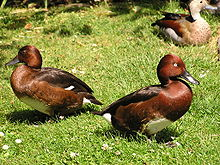
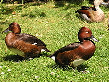

| Ferruginous Duck | |
|---|---|
|  | |
| Ferruginous Ducks | |
| Conservation status | |
| Binomial name | |
| Aythya nyroca (Güldenstädt, 1770) |
| Ferruginous Duck | |
|---|---|
|  | |
| Ferruginous Ducks | |
| Conservation status | |
| Binomial name | |
| Aythya nyroca (Güldenstädt, 1770) |
The Ferruginous Duck (Aythya nyroca) is a medium-sized diving duck from Eurasia. The species is known colloquially by birders as "Fudge Duck".
Their breeding habitat is marshes and lakes with a metre or more water depth. These ducks breed in southern and eastern Europe and southern and western Asia. They are somewhat migratory, and winter farther south and into north Africa.
The adult male is a rich chestnut colour with a darker back and a yellow eye. The pure white undertail helps to distinguish this species from the somewhat similar Tufted Duck. The female is similar but duller, and with a dark eye.
These are gregarious birds, forming large flocks in winter, often mixed with other diving ducks, such as Tufted Ducks and Pochards.
These birds feed mainly by diving or dabbling. They eat aquatic plants with some molluscs, aquatic insects and small fish. They often feed at night, and will upend (dabble) for food as well as the more characteristic diving.
It is one of the species to which the Agreement on the Conservation of African-Eurasian Migratory Waterbirds (AEWA) applies.

{kind=link}